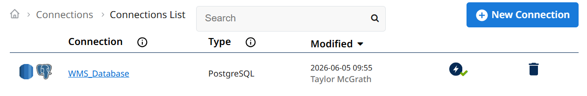
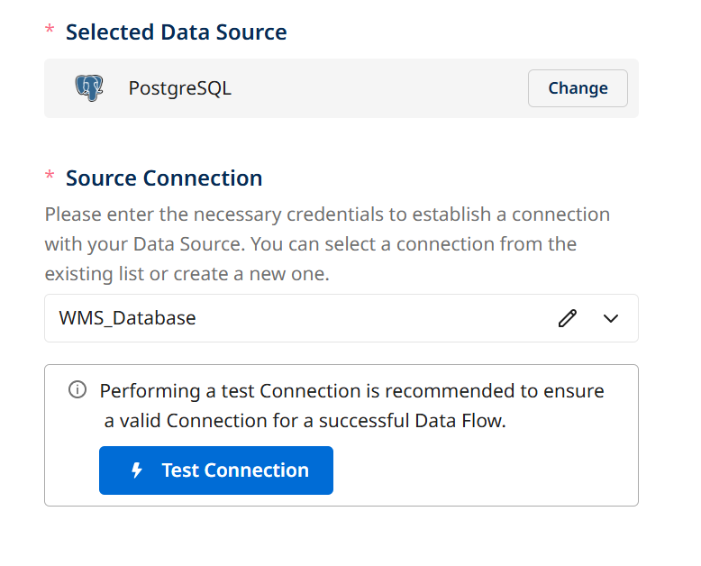
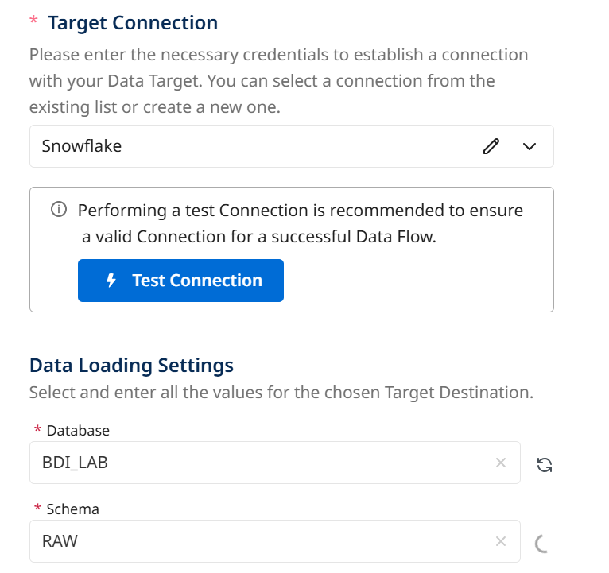
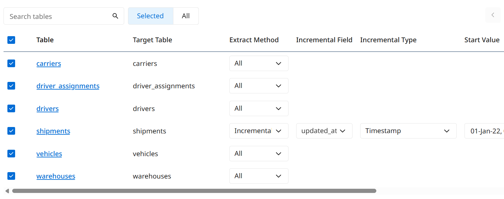
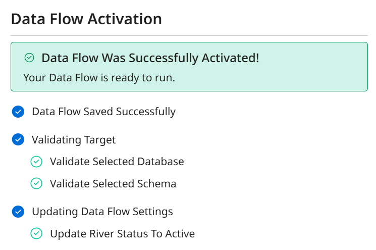
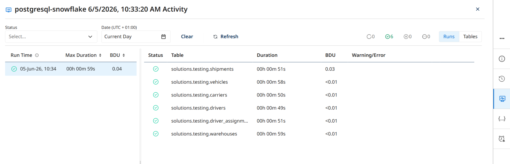

Replicate PostgreSQL Data into Snowflake
Connect BDI to the WMS PostgreSQL database and run a full initial load of six tables into Snowflake.
What you'll do
Praxis's operational data lives in a PostgreSQL database called wander_freight_wms. In this exercise you'll create a BDI Source-to-Target Flow that connects to it, selects six tables, sets the Shipments table to Incremental extraction, and loads everything into BDI_LAB.RAW in Snowflake.
Connect BDI to PostgreSQL
Verify the pre-provisioned PostgreSQL connection is working.
-
1
In BDI, go to Connections. You should see a PostgreSQL connection called WMS_Database already provisioned for this lab.

-
2
Click on WMS_Database and verify the test passes.

Create a Source-to-Target Flow
Configure source, target, and schema selection.
-
1
Click Create in the left navigation bar and choose Source to Target Flow.
-
2
Search for PostgreSQL in the Source search bar and select the WMS_Database connection.

-
3
Navigate to the Target tab. Choose Snowflake and select your connection from Exercise 0. In Data Loading Settings enter Database
BDI_LABand SchemaRAW. -
4
Navigate to the Configure Schema tab. Select all six tables: Carriers, Driver_assignments, Drivers, Shipments, Vehicles, Warehouses.

For the Shipments table, change the Extract Method to Incremental via the dropdown. In the Incremental Field dropdown, choose updated_at and select a start value of 2022-01-01.
-
5
Navigate to Schedule & Settings. Switch the Schedule toggle to OFF. Name the flow bdi-lab-postgres-snowflake and click Activate in the bottom right corner.

Run the Data Flow
Activate and trigger the first full load.
-
1
Once the activation completes, click Run Data Flow.
-
2
Click the television-shaped icon on the right side to open the Activities screen. Watch each table load in real time. Once all tables show a green check mark, the load is complete.

Verify in Snowflake
Confirm data arrived in BDI_LAB.RAW.
-
1
In Snowsight, open a SQL Worksheet and run:
SELECT COUNT(*) AS shipment_rows FROM BDI_LAB.RAW.SHIPMENTS; SELECT * FROM BDI_LAB.RAW.SHIPMENTS LIMIT 5;Ensure that the above query returns data.

Next up